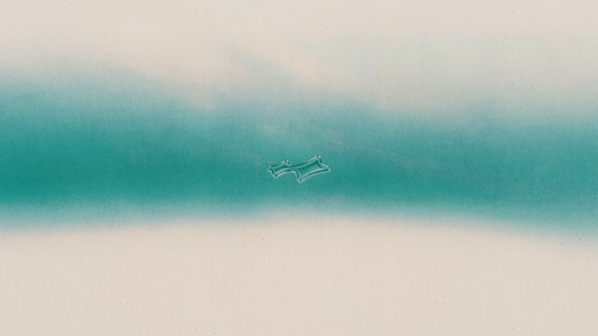

AREA 02 是台灣的潮流／球鞋交易平台。我從 2023 年加入，負責把社群從單純的「互動經營」逐步轉型成能實際帶動網站流量與成交的成長引擎。這個作品記錄兩個階段的策略轉變。
[ 換成你的話：品牌背景、你接手時的狀態、你想達成的目標。 ]
2023.07 — 2025.04 打底期：專注社群渠道的互動經營與粉絲成長，負責圖文編排與文案撰寫，建立品牌在潮流社群的聲量與內容調性。
[ 補充：你做了哪些內容、成長了多少、哪些貼文表現最好。 ]
2025.11 — Now 升級期：新增網站流量增長與導購轉換的目標，負責社群策略制定、擔任外部廠商洽談窗口、主導社群企劃，並帶領一人團隊執行。
[ 補充：你制定了什麼策略、談了哪些合作、轉換成效如何。 ]
[ 換成真實成果：粉絲／流量／轉換的具體變化，以及你帶來的關鍵轉折。用數字說話最有力。 ]